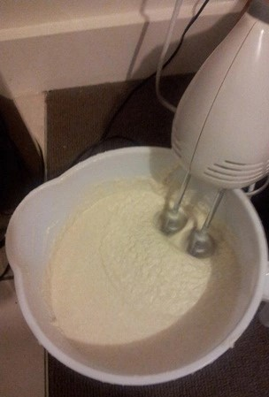
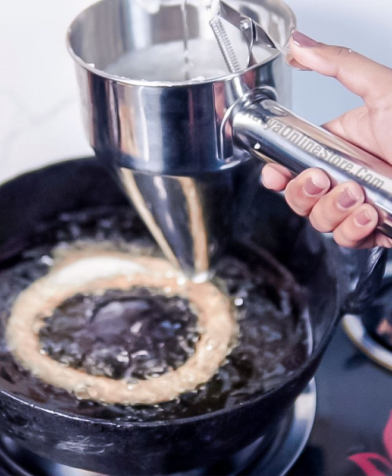

Nepalese ring-Shaped
Sweet bread
Sel Roti is a traditional Nepalese sweet ring-shaped bread prepared during Dashain and Tihar festivals.

Prep. Time
15 minutes
Cook Time
25 minutes
Total Time
40 minutes
Servings
2

Ingredients
- 1/2 cup Rice
- 2 tablespoons Sugar
- 2 tablespoons Ghee
- 1 tablespoon Rice flour
- 1/4 teaspoon Cardamom Powder (Elaichi)
- 2 tablespoons Water , + water for soaking rice
- Oil , as required for deep frying
Procedures
- To begin making the Sel Roti recipe, wash and soak the rice overnight.
- Next day, drain the excess water from the rice. Take drained rice in a mixer jar and blend to a fine paste.
- Take the paste in a bowl and add sugar, ghee, rice flour and cardamom powder to it.
- Gradually add about 1-2 tablespoon water to it and whisk well till sugar dissolves completely. Batter should be of a thick consistency.
- Heat oil in a wide pan. Using a ladle, pour the batter in a circle shape into the hot oil.
- Reduce the flame to medium and let it cook on one side. Flip it to the other side using a tong. Fry till it gets light golden brown from both sides.
- Remove and drain on an absorbent paper. Store them in an air tight container once they cool down completely.
- Sel Roti can be served as a tea-time snack with tea/coffee or other beverages.

Nutritions
Calories: 291kcal | Carbohydrates: 45g | Protein: 6g | Fat: 10g | Saturated Fat: 1g | Polyunsaturated Fat: 1g | Monounsaturated Fat: 7g | Sodium: 147mg | Potassium: 61mg | Fiber: 1g | Sugar: 3g | Vitamin C: 1mg | Calcium: 9mg | Iron: 3mg